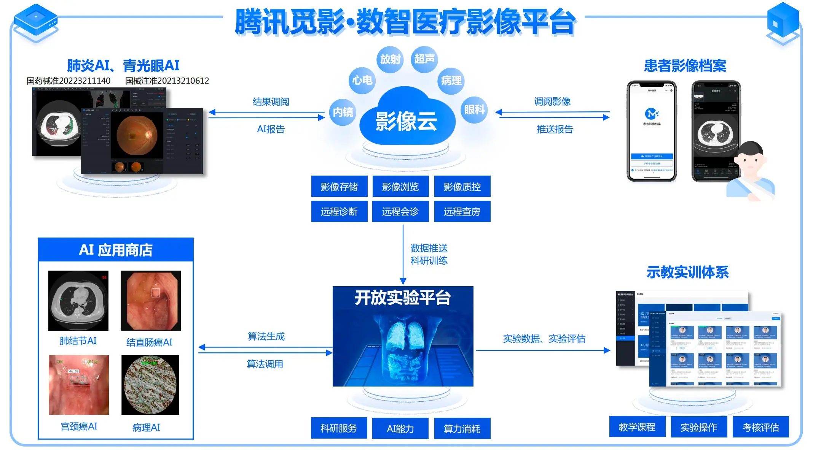

AI辅助医疗影像诊断系统是一款基于深度学习技术的智能医疗影像分析平台，专门设计用于辅助放射科医生进行CT、MRI、X光等医学影像的诊断工作。系统通过先进的计算机视觉算法，能够自动识别和标注影像中的异常区域，为医生提供第二意见，显著提高诊断效率和准确率。
该系统由我司与国内顶尖三甲医院放射科合作开发，经过两年多的临床验证和算法优化，目前已在全国10余家三甲医院投入使用，日均处理影像超过5000例，成为医生日常工作的重要辅助工具。
支持CT、MRI、X光、超声等多种医学影像模态的智能分析，针对不同影像特点采用专门优化的算法模型，确保分析精度。
自动识别影像中的可疑病灶区域，如肺部结节、脑部出血、骨折线等，并用不同颜色标注不同置信度区域，辅助医生快速定位问题。
根据影像分析结果自动生成结构化诊断报告草案，包含病灶位置、大小、特征描述等关键信息，医生只需进行复核和修改，大幅减少报告撰写时间。
系统可自动识别疑似脑卒中、肺栓塞等紧急病例，优先处理并提醒医生，缩短危急患者的等待时间，为抢救争取宝贵时间。
自动匹配患者历史影像，并对比病灶变化情况，量化评估治疗效果，辅助医生制定后续治疗方案。
系统采用先进的深度学习技术架构，结合医疗影像特点进行了专门优化：
经过一年多的临床应用，系统在多家合作医院取得了显著成效：
北京某三甲医院放射科主任评价："AI辅助系统的引入改变了我们的工作模式。以前医生需要花费大量时间在影像筛查上，现在系统能够快速定位可疑区域，我们只需重点关注这些区域并进行专业判断，工作效率提高了近40%，同时诊断一致性也显著提升。"
在低剂量CT肺癌筛查中，系统可自动检测3mm以上的肺结节，并分析其恶性概率，辅助医生早期发现肺癌病例。在某医院体检中心的应用中，已帮助发现多例早期肺癌，患者得到及时治疗。
对于急性脑卒中患者，系统可在CT影像上快速识别出血或梗死区域，量化评估病灶体积，为溶栓治疗决策提供客观依据。在急诊科的应用中，平均缩短评估时间15分钟。
在X光平片检查中，系统可自动识别细微骨折线，特别是脊柱、肋骨等复杂部位的隐匿性骨折，减少漏诊。在某骨科医院的应用中，使骨折检出率提高了12%。
AI辅助医疗影像诊断系统操作演示视频
如果您所在医院对本系统感兴趣，欢迎联系我们获取更多信息和演示安排：